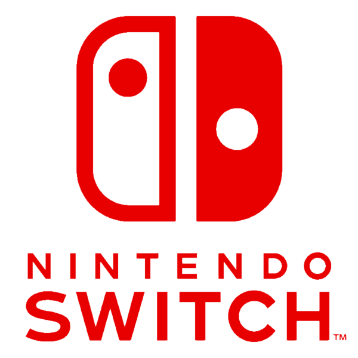
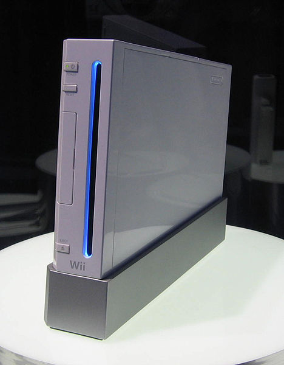

Sejarah Nintendo Switch

Nintendo Switch (ニンテンドースイッチ Nintendō Suitchi) adalah konsol video game yang dirilis perusahaan Nintendo pada 3 Maret 2017. Konsol ini juga dikenal dengan codename NX pada pengembangannya. Konsol ini dijual seharga $299.99 pada tanggal perilisannya.
Sejauh ini, konsol ini merupakan satu-satunya konsol hybrid - konsol yang merupakan konsol rumahan namun sekaligus konsol portabel juga. Lebih jelasnya, konsol ini dapat dimainkan dengan 3 cara,
- Home Console Way dengan meletakkan layarnya pada "docking station"-nya dan memainkannya melalui televisi
- Handheld Way dengan memainkannya sambil memegangnya
- Tabletop Way dengan meletakkannya diatas meja dan mencabut kontrolernya dan memainkannya sambil bersantai di kursi
Konsol ini menggunakan kontroler yang disebut Joy-Cons, kontroler ini dapat dilepas dari badan utama konsolnya. Joy-Cons dilengkapi dengan Accelerometer, Giroskop, Infrared Depth Sensor dan Komunikasi Jarak-Dekat.
Sejarah Nintendo Wii

Wii adalah konsol permainan video kelima Nintendo yang merupakan penerus Nintendo GameCube. Inovasi utamanya adalah kontroler (joystick) yang merespon terhadap letaknya dalam ruang fisik tiga dimensi yang terletak di depan televisi. Pada tahap awal pengembangan, konsol ini diberi nama Revolution.
Konsol ini diperkenalkan dalam Tokyo Game Show 2005 pada 16 September 2005. Konsol ini dirilis pada November 2006 di AS dan Desember di Jepang dan beberapa wilayah lainnya, dan bersaing dengan PlayStation 3 dan Xbox 360.
Wii mempunyai kompatibilitas lama (backward compatibility) dengan beberapa konsol lama Nintendo dan Sega, termasuk NES, TurboGarfx-16, SNES, Genesis, Nintendo 64 dan GameCube. Kompatibilitas dengan GameCube dicapai dengan diadakannya slot bagi CD berukuran 8 cm seperti yang digunakan GameCube, sementara untuk yang konsol lainnya hal ini diperoleh melalui jasa konsol virtual (Virtual Console) yang merupakan salah satu fitur Wii. Melalui Virtual Console, pengguna Wii dapat membeli dan mengunduh game-game lama dan dimainkan langsung di Wii melalui channel Wii Shop.